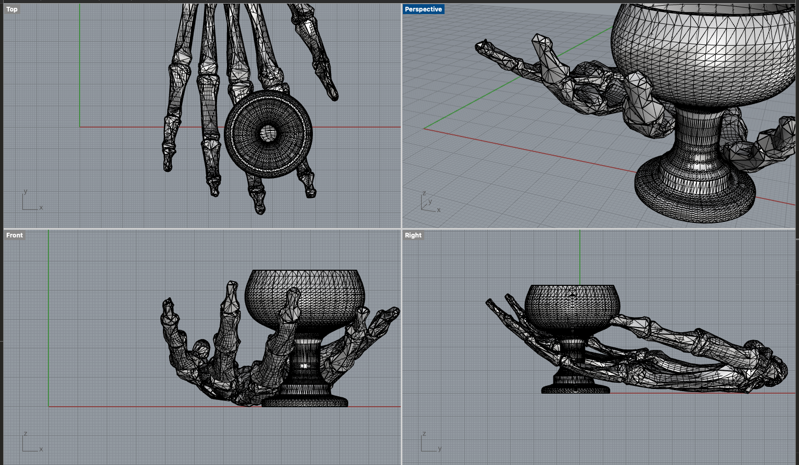

For the first part of this assignment, we needed to modify the mesh of two STLs to produce a single printable STL.
I spent an outrageous amount of time scrolling Thingiverse, and finally landed on combining a skeleton hand and a goblet from Thingiverse. I wanted the skeleton hand to be daintily holding the goblet between its fingers. Been having a real claw moment lately.


I imported both STLs into Rhino, scaled them each to be more proportional to each other (the hand was waaay smaller), and took a closer look at the mesh. The hand was in a bunch of separate meshes, so it was difficult to move and manipulate as a whole, so I joined them to form a single mesh hand. Otherwise, the meshes seemed to be in good shape, I didn't clock any dreaded open polysurfaces. Most of my time combining them was spent moving, scaling, and rotating to get the angle, sizing, and fit solid. I mirrored the hand after reading on Thingiverse make review that it needed less supports printed that way. No matter what I did though, its fingers kept poking through the stem or the cup of the goblet, so I ended up turning PointsOn for the goblet, selecting the base points via SelBrush and moving them down, then selecting the top points via SelBrush and moving them up. The goblet stem angles got a lil freaky...but it's already a skeleton hand holding a goblet, so freaky felt right. Then I turned PointsOff for the goblet, selected both the hand and goblet, and ran QuadRemesh. Rhino called it a closed mesh and I didn't see any bright blue peaking through anywhere (I customized the color for my backfaces like Nadya showed us in class), so I exported it as a single STL.
I wanted to see if the STL I'd created was genuinely printable, so I imported the STL into Cura and decided to slice it up. I'd tried to print a mushroom with supports earlier and they got stuck to it, so I did a little more research into what settings to use for more easily removable supports, found this article, and sliced it with a support density of 5%, support pattern of "lines", and support placement of "touching buildplate".

It printed! And the supports did mostly come off this time...but still not super cleanly.

For the second part of this assignment, we needed to *start* making a lamp by acquiring lamp innards, measuring those innards, and digitally fabricating a lamp that wouldn't need any adhesives to attach to the innards.
I, again, spent too much time conceptualizing my dream 3D printed lamp. I made a Pintrest board of ideas. It got out of hand.

I eventually landed on the realization that my teeny apartment is full of shit already, but I have been wanting to build out a funkier live performance setup for my music project, so I could focus on designing for that. The project is named after a mushroom - specifically, an Old Man of the Woods - so I wanted to create a lamp of that lil guy and base the model on an illustration from my merch. The cap is spiky and could lend itself to emitting some geometric light patterns, so I found a few mushroom lamps on Thingiverse for inspiration and started researching YouTube tutorials on creating voronoi patterns in Grasshopper to make the cap.
Sadly, my Grasshopper tutorials were fruitless and left me with only a lingering urge to kill. First, I followed along with the this tutorial about making a facet dome and ended up with an open polysurface that I couldn't figure out how to make into a mesh (the horror!). Other watchers had experienced the same issue, as seen in the comments...which I definitely should've read before watching. Next, I tried following this tutorial about constructing a fascia ball, and I ended up with an ice pick sculpture that looked veery different from their spiky ball output no matter what parameters I set.


Remembering how many meshes existed on Thingiverse already, I decided to use one from there as the cap to start, and chose this pinecone-esque dragon egg. I created a simple tube that was the website listed width of the lamp base innard (29mm - I hadn't recieved it in the mail yet), made that a mesh, imported and scaled the dragon ball STL until it made sense proportionally as a mushroom cap, and joined them into a single mesh. Before I put any more effort into the modeling phase, I wanted to see what this could look like printed with "spiralize outer contour", so I exported it as an STL, imported it into Cura, sliced it with those settings, and test printed it at 10% of its intended size to save time.

It printed cute but verrry thin - removing the shroom from the raft made its cap and stem crack apart from each other. I noted to look into whether you could change the thickness of the spiralized outer contour in Cura, or if I just needed to build a cleaner model that joined the cap and stem in Rhino. I did get some important intel into the disco potential of the pinecone cap though! Big fan.

Next, I finally got the lamp base in the mail, so I put a little IKEA lightbulb in there and measured it all together. The measurements are listed in mm in the image below (rounded to the nearest whole number), as recorded via a caliper and measuring tape. I tried to divide it into segments with maximum widths that the lamp should fit around and approximated the height of each.